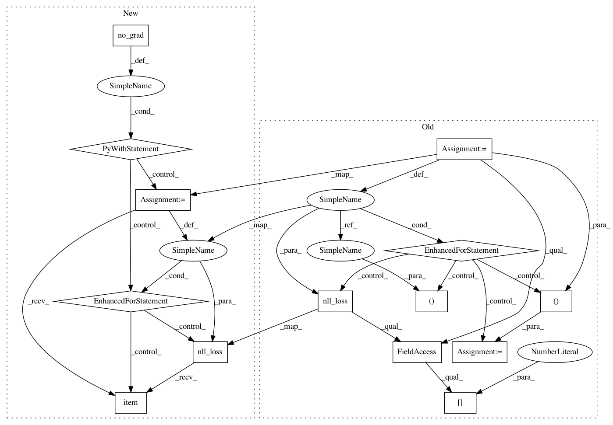

90fbeed3469b8bb2d5731789624b12e4c84df461,code/deep/MRAN/MRAN.py,,test,#Any#Any#,114
Before Change
test_loss = 0
correct = 0
for data, target in test_loader:
if args.cuda:
data, target = data.cuda(), target.cuda()
data, target = Variable(data, volatile=True), Variable(target)
s_output, t_output = model(data, data, target)
test_loss += F.nll_loss(F.log_softmax(s_output, dim = 1), target, size_average=False).data[0] // sum up batch loss
pred = s_output.data.max(1)[1] // get the index of the max log-probability
correct += pred.eq(target.data.view_as(pred)).cpu().sum()
test_loss /= len(test_loader.dataset)
print(args.test_dir, "\nTest set: Average loss: {:.4f}, Accuracy: {}/{} ({:.0f}%)\n".format(
test_loss, correct, len(test_loader.dataset),
100. * correct / len(test_loader.dataset)))
After Change
model.eval()
test_loss = 0
correct = 0
with torch.no_grad():
for data, target in test_loader:
if args.cuda:
data, target = data.cuda(), target.cuda()
s_output, t_output = model(data, data, target)
test_loss += F.nll_loss(F.log_softmax(s_output, dim = 1), target, reduction="sum").item()// sum up batch loss
pred = s_output.data.max(1)[1] // get the index of the max log-probability
correct += pred.eq(target.data.view_as(pred)).cpu().sum()
test_loss /= len(test_loader.dataset)
print(args.test_dir, "\nTest set: Average loss: {:.4f}, Accuracy: {}/{} ({:.0f}%)\n".format(
test_loss, correct, len(test_loader.dataset),
100. * correct / len(test_loader.dataset)))
return correct
if __name__ == "__main__":
In pattern: SUPERPATTERN
Frequency: 3
Non-data size: 14
Instances
Project Name: jindongwang/transferlearning
Commit Name: 90fbeed3469b8bb2d5731789624b12e4c84df461
Time: 2019-10-21
Author: 1299192934@qq.com
File Name: code/deep/MRAN/MRAN.py
Class Name:
Method Name: test
Project Name: pytorch/examples
Commit Name: 645c7c386e62d2fb1d50f4621c1a52645a13869f
Time: 2018-04-24
Author: soumith@gmail.com
File Name: mnist/main.py
Class Name:
Method Name: test
Project Name: pytorch/tutorials
Commit Name: 0ad33d606682537466f3430fc6d6ac7d47460f1a
Time: 2018-04-24
Author: soumith@gmail.com
File Name: intermediate_source/spatial_transformer_tutorial.py
Class Name:
Method Name: test
Project Name: jindongwang/transferlearning
Commit Name: 90fbeed3469b8bb2d5731789624b12e4c84df461
Time: 2019-10-21
Author: 1299192934@qq.com
File Name: code/deep/MRAN/MRAN.py
Class Name:
Method Name: test